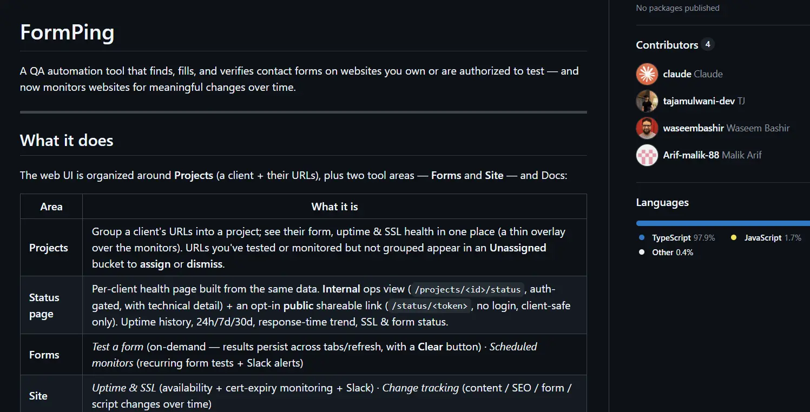
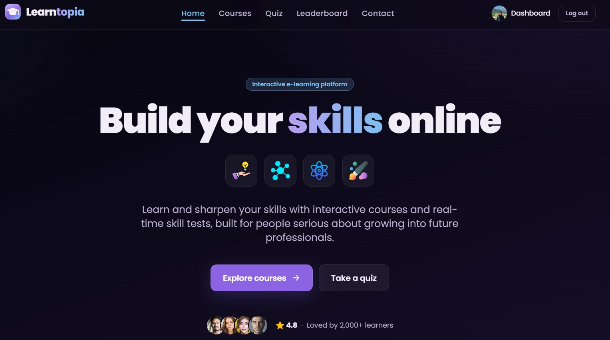
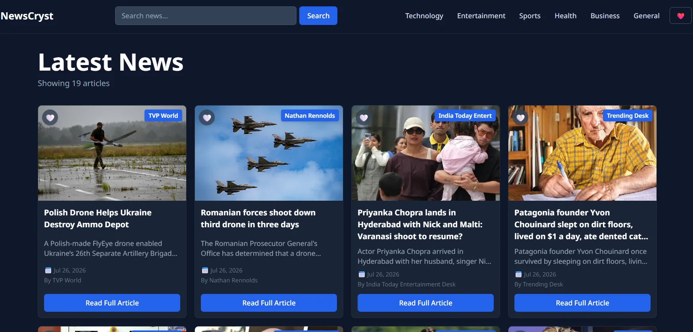

CRM architecture & pipelines
Complete CRM systems inside GoHighLevel, HubSpot, and Salesforce. Your CRM becomes the engine that drives every campaign, not just a contact database.
- Pipeline stages
- Lead scoring
- Auto-routing
Marketing Operations Engineer
Systems builder / Growth infrastructure engineer
I architect the systems that make marketing work - CRM pipelines, automated funnels, custom-coded landing pages, and email infrastructure across GoHighLevel, HubSpot, ClickFunnels, and more. Recently extended into AI-directed product development, owning deployment and QA for live tools I build by directing Claude Code.

About
I build the full stack of marketing infrastructure: CRM pipelines, automated funnels, outbound campaigns, email sequences, and custom-coded assets across GoHighLevel, HubSpot, ClickFunnels, Kajabi, LearnWorlds, and more. I sit at the intersection of strategy and execution — fluent in code when precision demands it, and in no-code platforms when speed does.
Most marketers stop at the campaign. I own the plumbing underneath it: the tagging logic, the routing rules, the webhook that fires at 2am, the checkout that hands off cleanly to a post-purchase sequence.
Services
Six capabilities that stack into one working revenue system, not six disconnected deliverables.
Complete CRM systems inside GoHighLevel, HubSpot, and Salesforce. Your CRM becomes the engine that drives every campaign, not just a contact database.
End-to-end workflows across GoHighLevel, Zapier, and HubSpot. I replace manual follow-up with systems that run on their own.
Full funnel architecture in GoHighLevel and ClickFunnels, product pages, order forms, upsells, checkout - all wired to CRM and post-purchase automation.
Trigger-based workflows that nurture leads and drive repeat revenue, with measurable conversion goals at every stage.
Custom-coded in HTML, CSS, and JavaScript or built on Unbounce, Wix, WordPress, and HubSpot, whichever fits your stack.
When no-code platforms hit their limits, I build the bridge - the technical layer that makes your entire marketing stack talk to each other.
Case Studies
Selected work combining audience research, campaign analysis, and automation into measurable growth systems.
Wilms — Scandinavian solar shading manufacturer
I defined an ICP from Wilms' existing client base and built a targeted outreach motion for Sweden's architecture, real estate, and facilities sectors, then analysed the send data and turned it into a scale / pause / optimise plan.
GoHighLevel · Zapier · Typeform
A fully automated lead journey where a Typeform quiz qualified every visitor by intent, auto-tagged them, and pushed that into GoHighLevel via Zapier, routing each lead into a matched nurture sequence without manual sorting.
Selected Work
Live builds across CRM, funnels, landing pages, and custom code.

End-to-end GoHighLevel build for The Trading Cafe - product store, checkout, CRM pipeline, tagging, and post-purchase sequences. Zero manual follow-up after purchase.
View live
Full funnel architecture in ClickFunnels Classic - product page, order form, upsell, and thank-you page, wired to post-sale automation. Built for a legal services client.
View live
Custom Wix landing page wired to Zapier for automated notifications and real-time contact syncing into Salesforce. A zero-touch inbound lead management system.
View live
AI-directed QA automation and website-monitoring tool, co-built with a collaborator. As the top contributor, I own product scope, database design (Supabase), and ongoing QA/bug triage. Live and in active use.
View on GitHub
AI-directed React learning platform built with React, Tailwind, React Router, and Firebase auth, store, and database. Hosted on Firebase Hosting with GitHub CI/CD and full-stack ownership.
View live
AI-directed React news experience launched independently on Netlify. Owned end-to-end, with custom front-end workflows and production deployment.
View live
Custom JavaScript app with third-party API integration returning detailed recipes and video from a single search. Clean API architecture outside no-code environments.
View live
Conversion-focused Unbounce page for a live music campaign, built for maximum ticket registrations. Created for Parker McCollum via The Chorus platform.
View live
Full WordPress build for a UK-based charitable organisation, with a responsive layout, and SEO optimisation. Designed for trust, clarity, and donor engagement.
View liveContact
Whether it's a CRM that's really just a spreadsheet, a funnel leaking leads at checkout, or an integration nobody can get working, send me the details and I'll tell you how I'd fix it.